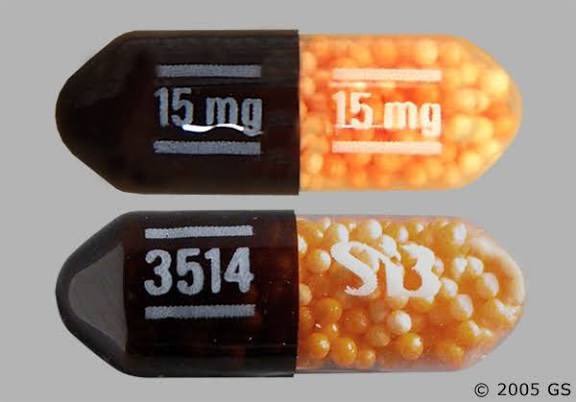

小虚空🍥
@tokerumaisurii
@RaoulDaisy 你大概可以这么理解，但不完全一样

小虚空🍥
@tokerumaisurii
利右苯丙胺严格来说不是像专注达那样的缓释剂。
一般的药物在体内可以较快地吸收达峰，所以会加上缓释壳或者做成缓释微球、咀嚼缓释片等等，防止短时间内血药浓度过高，或半衰期短导致持续时间过短，利右苯丙胺的代谢物右苯丙胺也是如此，所以Dexedrine这款药也是缓释微球。
图片/MedWorks Media
1/4 https://t.co/7Ji292PCXT
R.D
@RaoulDaisy
@tokerumaisurii 这款是不是只有缓释的